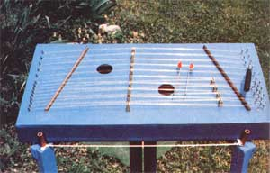
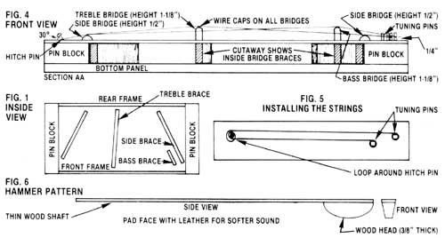
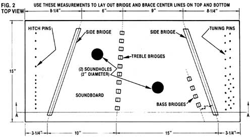
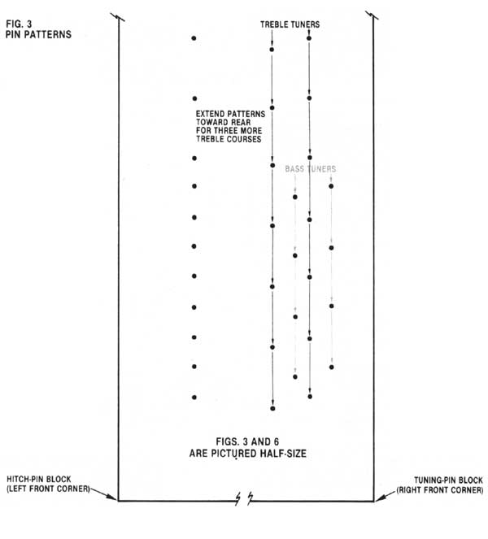
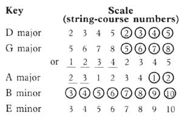
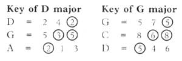
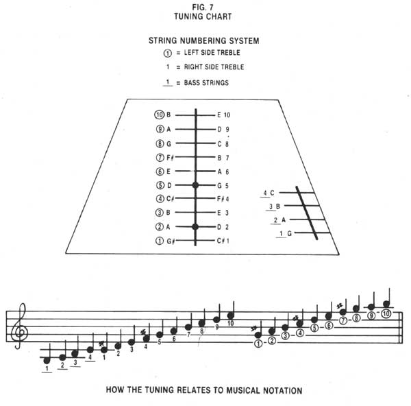

A charming, old-time musical instrument returns to our midst!
Homemade music is alive and well. In fact, it's experiencing a brisk revival ... and, as a result, some wonderful musical instruments have been rescued from obscurity. One of these is the hammered dulcimer: a delightful "tune box" which was, until around the turn of the century, very popular in our country. Fortunately, a small enclave of devoted players stuck with this instrument during its years of low popularity ... and now its distinctive, happy voice is being heard again throughout the land. Luthiers are turning out dulcimers in great numbers, and many recordings are being made that feature the instrument in a wide variety of musical settings.
Some of the hammered dulcimers built today are truly works of art. Designed and constructed by fine crafts people, they're made of top-quality--and often exotic-woods, and many of them incorporate exquisite ornamentation to match their beautiful sound. The cost of professionally built dulcimers can range anywhere from several hundred to several thousand dollars, depending on the instrument's size and the degree of craftsmanship involved. With a modicum of tools and experience, however, you can build a hammered dulcimer that will have a lovely, clear, and brilliant voice (dulcimer, after all, means "sweet song"). The necessary materials are readily available, and the basic construction is little different from building a box. Furthermore, the total cost of your homemade product should run around $25!
The pin blocks, frame, internal bridge braces, and the bridges themselves will have to be made from fairly strong hardwood ... such as white oak, maple, cherry, or walnut. However, the most crucial wood is that used for the pin blocks: It must be dense enough to grip the tuning pins tightly, and strong enough to take the great stress imposed by taut strings. Maple is the material most often used for these components, but many good hardwoods will suffice. (In fact, I've constructed some dulcimers using oak recycled from wooden pallets.) Glancing at the list of materials below, you'll notice that the pin blocks are made from 2 X 4 stock. If you have difficulty locating appropriate pieces of this size, you can make your own by laminating several thinner hardwood boards together. For example, by joining three 3/4" X 31/2" planks, you can produce a block that's 2-1/4" thick. You'd then have to use 2-1/4"-wide pieces for the frames and inside braces as well, but this wouldn't interfere with the instrument's "voice" in any way.
The dulcimer's top (soundboard) and bottom can be made from plywood ... anything from A-C grade fir on up to the top grades will do. For dulcimer construction, the beauty of plywood lies in its enormous strength and dimensional stability, which will add much to the structural integrity and longevity of your instrument. The acoustical qualities of plywood panels are especially well suited to the dulcimer, producing a very desirable sound without too much sostenuto (sustainment of tone).
Keeping the above information in mind, you'll need to make or procure the following:
Materials:
3/4" X 15" X 31-1/2" bottom panel
(2) 1-3/4" X 3-3/4" X 15" pin blocks
(2) 3/4" X 1-3/4" X 24" frames (front and back)
(2) 3/4" X 1-3/4" X I I" side bridge braces
3/4" X 1-3/4" X 12" treble bridge brace
3/4" X 1-3/4" X 5" bass bridge brace
1/4" X 15" X 31-1/2" soundboard (top)
(2) 1/2" X 3/4" X 13-1/2" side bridges
(14) 1/2" X 3/4" X 1-1/8" bridges (10 treble and 4 bass)
(14) metal bridge caps (coat-hanger wire)
(2) side bridge caps (coat-hanger wire)
(14) No. 8 X I" roundhead screw hitch pins
(28) 0.198" diameter X 1-5/8" tuning pins (zither-type)
No. 6 (0.016" diameter) plain music wire
No.. 8 (0.020" diameter) plain music wire
No. 10 (0.024" diameter) plain music wire
some glue (Elmer's Carpenter's Glue or Franklin's Tite Bond are good) various grades of sandpaper (from coarse to superfine) some paint or varnish
Tools: A hand-and coping saw, an electric drill with 9/64" and 3/16" bits, bar and C-clamps, an awl, and a sharp knife.
Playing Accessories: A pair of hammers (see Fig. 6), a tuning wrench, and a pitch pipe.
STEP-BY-STEP CONSTRUCTION
To begin, round off the top edges of the inside treble and bass bridge braces to limit their contact with the soundboard. Next , glue the pin blocks, outside frames, and all four inside braces to the bottom panel (see Fig. 1). During this step, it's best to leave the bottom piece slightly oversized, and then trim it to fit after the adhesive has dried. Be sure that all of the joints are flush and square. Use clamps to hold the components in place while the glue is setting, or assemble the parts with screws to provide strong clamping action. When the interior is complete, finish it with paint or varnish, except for the top edges of the frames, braces, and pin blocks (to which the soundboard will be glued).
With that done, cut out the soundholes and glue the soundboard in place at all points, including the rounded top surfaces of the treble and bass bridge braces (see Fig. 2). Next, after measuring and aligning them carefully, glue the side pieces to the soundboard. Then, when the adhesive has dried, go on to sandpaper and paint or varnish the entire instrument.
At this point, you'll need to bring the tuning and hitch-pin patterns (see Fig. 3) up to size, and transfer them to each pin block area by simply piercing the dots with an awl. You can then drill the tuning-pin holes with a 3/16" bit, and install the tuning pins by gently driving (not screwing) them into their holes. Be sure to leave 1/4" of space between the string hole in the pin and the soundboard, to allow room for the winding of the strings (see Fig. 4). Now, drill the 9/64" holes for the hitch pins, and install those components at an outward angle of about 30°.
To string your dulcimer, you'll need No. 10 music wire for the four bass courses, No. 8 for the lower five treble courses, and No. 6 for the upper five (highest-pitched) treble courses. (A course of strings is a group of two or more tuned in unison.) When installing the wires, allow enough slack to wind two or three full turns around each tuning pin. The last turn should be fairly close to the base of the pin. A method of installing one long string to make up the required pair for each separate string course is shown in Fig. 5.
Next, with a sharp knife or a nail, make a straight, shallow groove in each bridge to hold the wire capping material in place ... and clean any paint off the coat hanger before cutting it to size and laying it in the groove. Then install the treble and bass bridges under the strings (the pressure of the tuned strings will hold them in place).
To insure that the strings make solid contact with the side bridges, you'll have to lower the height of three or four treble bridges at the rear of the instrument. The bass strings will not contact the right side bridge, and this is normal. However, the proper contact of the rest of the strings with their appropriate bridges is a most important detail, so pay close attention to this factor.
The really critical measurements are those involved in the placement of the treble bridges, which must divide the strings crossing them into tones a fifth apart (a proper fifth interval sounds like the "Twinkle, twinkle" of the song "Twinkle, Twinkle, Little Star"). The distance between the left side bridge and the treble bridges must be two-thirds of that between the right side bridge and the treble bridges (see Fig. 2).
Finally, when you've made a pair of hammers (see Fig. 6), you'll be ready to tune and play your completed instrument.
Keeping the tuning chart provided in Fig. 7 in front of you, begin adjusting your instrument's strings slowly and carefully, using a chromatic pitch pipe (available at all music stores) or a piano for reference. Start by tuning the C# note on the right side of the first treble-course bridge. When this pair of strings is correctly adjusted, you'll have automatically tuned the strings on the left side of the same bridge to G#. Continue up the right side of the treble bridges until you've completed tuning the high C at course number 8 (on the chart). Once that's accomplished, you can adjust the remaining treble and bass courses by setting their notes an octave above or below notes you've already tuned up. For example, to tune the G at the first bass course, compare it with the G you've already tuned up at the right treble course number 5, and simply set it an octave lower. (If tuning is difficult at first, you might want to enlist the help of a musician friend.)
When the strings are in tune, assume a comfortable position that allows free movement of hands, arms, and shoulders ... and get ready to play! Tilting the dulcimer slightly toward you will make it easier for you to reach to the rear string courses. (Many people build themselves stands to hold the instrument at an angle while they play in either a sitting or a standing position.)
It may seem as though the dulcimer is somewhat limited because the player has only two hammers to strike notes with. You'll find, however, that it takes some concentration to keep from adding too much complexity to your playing. Since a dulcimer's design allows it to sustain sounds for quite some time, the instrument gives the effect of sounding more notes than are actually struck. The last few notes played mingle with the new ones, and a great part of the hammered dulcimer's charm lies in the fact that it provides its own background harmony in this fashion.
Begin by attempting familiar melodies in a simple manner, dividing your playing equally between both hands by alternating them as much as possible ... one note with one hand, the next note with the other, and so on. This is probably the single most important playing technique you can develop, and it's worth learning well. You can practice hand alternation and dexterity by playing scales up and down, building your speed and smoothness as you go. By referring to the string-course numbering system (see the tuning chart), you can play the commonly used scales below ... or, with a little retuning, develop others: In addition, here re some of the many chord possibilities you can use:
Scales and chords are important, but most people are eager to play a tune on their new instrument, so here's a familiar one to get you started. The numbers over the words indicate which strings to strike (check the tuning chart again). Hit each string at a point fairly close to the bridge (one or two inches away is about right).
Once you've got the hang of it, you'll be playing tunes by ear ... and wondering how on earth this wonderful instrument ever left the limelight!
There are some excellent mail-order sources for dulcimer building supplies, books, records, and playing instructional materials ... among them Andy's Front Hall, Dept. TMEN, Drawer A, Voorheesville, New York 12186 (catalog free), and Jean's Dulcimer Shop, Dept. TMEN, P.O. Box 8, Cosby, Tennessee 37722 (catalog $1.00, refundable). A magazine dedicated to dulcimers is The Dulcimer Players News, Dept. TMEN, P.O. Box 2164, Winchester, Virginia 22601. Finally, a good mail-order source of wood is Craftsman Wood Service, Dept. TMEN, 1735 West Cortland Court, Addison, Illinois 60101 (catalog $1.50).
Tuning wrenches for dulcimer-sized pins (they're usually called zither pins) can be found at most music stores: Ask for an autoharp wrench (those instruments use identical pins). The same music store, or your local piano tuner, may also be a good source for tuning pins and music wire.
EDITOR'S NOTE: The author himself has instruction tapes and books available for interested players. For more information, write to him at Dept. TMEN, Route 2, Box 140, Williamsburg, Kentucky 40769 ... and please enclose a self-addressed, stamped envelope with your inquiry.
|
 |
|
 |
|
 |
 |
 |
|
 |
|
 |